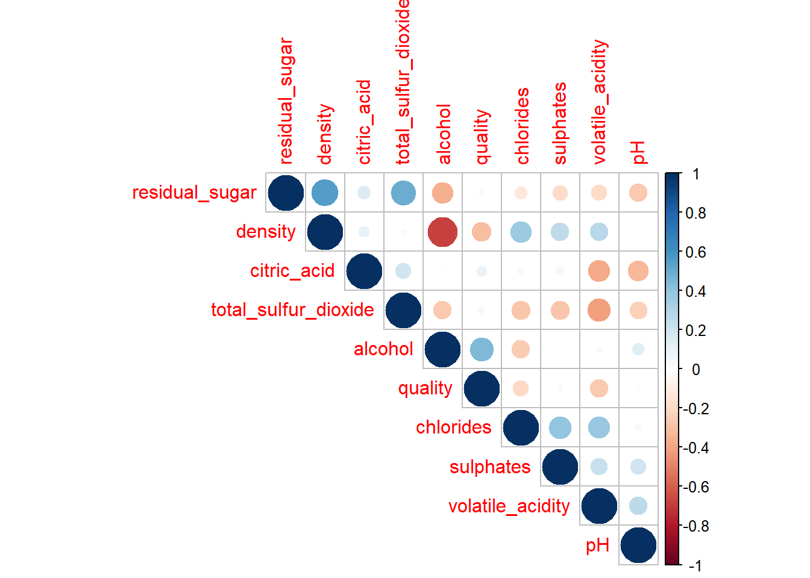
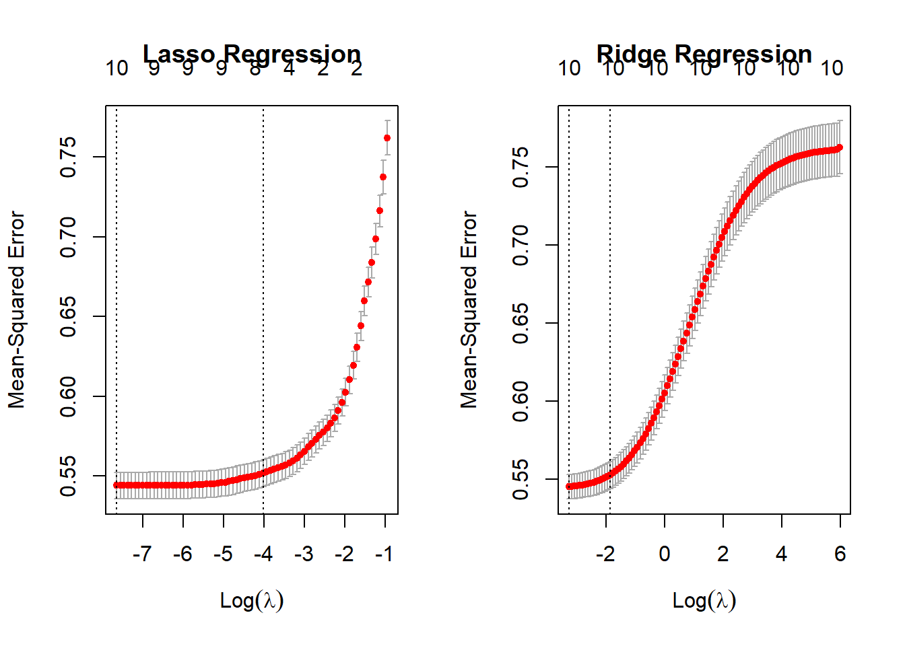

Please read the instructions carefully before submitting your assignment.
This assignment requires you to only upload a PDF file on Canvas
Don’t collapse any code cells before submitting.
Remember to make sure all your code output is rendered properly before uploading your submission.
⚠️ Please add your name to the author information in the frontmatter before submitting your assignment ⚠️
For this assignment, we will be using the Wine Quality dataset from the UCI Machine Learning Repository. The dataset consists of red and white vinho verde wine samples, from the north of Portugal. The goal is to model wine quality based on physicochemical tests
We will be using the following libraries:
library(readr)library(tidyr)library(dplyr)
Attaching package: 'dplyr'
The following objects are masked from 'package:stats':
filter, lag
The following objects are masked from 'package:base':
intersect, setdiff, setequal, union
library(purrr)library(car)
Loading required package: carData
Attaching package: 'car'
The following object is masked from 'package:purrr':
some
The following object is masked from 'package:dplyr':
recode
library(glmnet)
Loading required package: Matrix
Attaching package: 'Matrix'
The following objects are masked from 'package:tidyr':
expand, pack, unpack
Loaded glmnet 4.1-6
Question 1
50 points
Regression with categorical covariate and \(t\)-Test
1.1 (5 points)
Read the wine quality datasets from the specified URLs and store them in data frames df1 and df2.
Perform the following tasks to prepare the data frame df for analysis:
Combine the two data frames into a single data frame df, adding a new column called type to indicate whether each row corresponds to white or red wine.
Rename the columns of df to replace spaces with underscores
Remove the columns fixed_acidity and free_sulfur_dioxide
Convert the type column to a factor
Remove rows (if any) with missing values.
# adding the 'type' column to both the white and red wine data framesdf1 <- df1 %>%mutate(type ='white')df2 <- df2 %>%mutate(type ='red')# joining the two data frames on the type columndf <- df1 %>%full_join(df2, type = type)
# changing the period in column names to underscorescolnames(df) <-gsub('\\.', '_', colnames(df))# selecting all other columns beside fixed_acidity & free_sulfur_dioxide# removing any missing valuesdf <- df %>%select(-c(fixed_acidity, free_sulfur_dioxide)) %>%na.omit()# changing the type of the 'type' columndf$type <-factor(df$type)
Your output to R dim(df) should be
[1] 6497 11
# checking dimensions of dfdim(df)
[1] 6497 11
1.3 (20 points)
Recall from STAT 200, the method to compute the \(t\) statistic for the the difference in means (with the equal variance assumption)
Using df compute the mean of quality for red and white wine separately, and then store the difference in means as a variable called diff_mean.
Compute the pooled sample variance and store the value as a variable called sp_squared.
Using sp_squared and diff_mean, compute the \(t\) Statistic, and store its value in a variable called t1.
# subsetting the data frame by type of wine (returns all rows for that wine type)# using the mean function to find the mean of quality for each winered_wine_mean <-mean(subset(df, df$type =='red')$quality)white_wine_mean <-mean(subset(df, df$type =='white')$quality)# calculating the difference in mean between the 2 wine typesdiff_mean <- white_wine_mean - red_wine_mean# calculating the length and variance for quality for both wine typesnW <-length(subset(df, df$type =='white')$quality)nR <-length(subset(df, df$type =='red')$quality)varW <-var((subset(df, df$type =='white')$quality))varR <-var(subset(df, df$type =='red')$quality)sp_squared <- ((nW -1) * varW + (nR -1)* varR) / (nW + nR -2)# computing t-statistic for given mean differnce and pooled sample variancet1 <- diff_mean/(sqrt(sp_squared * (1/nW +1/nR)))
1.4 (10 points)
Equivalently, R has a function called t.test() which enables you to perform a two-sample \(t\)-Test without having to compute the pooled variance and difference in means.
Perform a two-sample t-test to compare the quality of white and red wines using the t.test() function with the setting var.equal=TRUE. Store the t-statistic in t2.
Fit a linear regression model to predict quality from type using the lm() function, and extract the \(t\)-statistic for the type coefficient from the model summary. Store this \(t\)-statistic in t3.
Print a vector containing the values of t1, t2, and t3. What can you conclude from this? Why?
c(t1, t2, t3)
t df$typewhite
9.6856496 9.6856496 0.2418868
From the printed vector containing ‘t1’, ‘t2’, ‘t3’, I can conclude that the difference between the 2 groups (red wine and white wine) is large relative to their variability. This can be interpreted based on the t-statistic from our calculations being ~9.68. From the t test, we saw that the \(p\)-value associated with the t-statistic is very small, indicating that the type of wine, is a good predictor of the quality of the wine. t3 is the type coefficient from the linear regression model summary between type and quality. Since type is categorical, the intercept is one of the types of wine (in this case red), while the other coefficient is the other type of wine (in this case white). Red wine is the baseline level and the white wine coefficient indicates that the quality increases on average, about 0.2418868 when going from red wine to white wine.
Question 2
25 points
Collinearity
2.1 (5 points)
Fit a linear regression model with all predictors against the response variable quality. Use the broom::tidy() function to print a summary of the fitted model. What can we conclude from the model summary?
model <-lm(quality ~ ., df)summary(model) %>% broom::tidy()
From the model summary we can conclude that a given wines citric acid and total sulfur dioxide may not be very important in the final model. These two variables have higher \(p\)-values compared to the other variables \(p\)-values, which allows us to infer that they may not be necessary and aren’t good predictors of a wines quality. The rest of the variables have very small \(p\)-values which means they are significant
2.2 (10 points)
Fit two simple linear regression models using lm(): one with only citric_acid as the predictor, and another with only total_sulfur_dioxide as the predictor. In both models, use quality as the response variable. How does your model summary compare to the summary from the previous question?
The model summary’s for the new models are pretty different than the original model that we created. In the original model, it indicated that citric_acid is not significant in the prediction of a wine’s quality as it had a high \(p\)-value. However, in the new model that uses citric_acid to predict quality, it says that citric acid is very significant and a good predictor as it has a very small \(p\)- value. Next, in the original model, it also said that the total sulfur dioxide was not significant either as it had a \(p\)-value around 0.2. In the new model where total sulfur dioxide predicts wine quality, it indicates that the total sulfur dioxide is more significant than before as it now has a \(p\)-value of 0.0008. This means it could be a decent predictor of a wine’s quality. Both the new models indicate that the given variables are more significant than the original model said they were.
2.3 (5 points)
Visualize the correlation matrix of all numeric columns in df using corrplot()
library(corrplot)
corrplot 0.92 loaded
dfCorr <- df %>%keep(is.numeric) %>%cor()corrplot(dfCorr, type ='upper', order ='hclust')

2.4 (5 points)
Compute the variance inflation factor (VIF) for each predictor in the full model using vif() function. What can we conclude from this?
From this we can determine the variables that have high inflation factors, which are residual_sugar, density, alcohol and type. Variance inflation measures the change in a given independent variable is influenced by its correlation with other independent variables. With the variables that have high variance inflation factors, this means that they have a highly collinear relationship to the other variables, and the regression results may not be as reliable. So a change in the other variables may have a big influence on the residual_sugar, density, alcohol and type of the wine. As for the rest of the variables that have a low variance inflation factor, their low VIF indicates that they aren’t susceptible to change based on the behavior of other variables.
Question 3
40 points
Variable selection
3.1 (5 points)
Run a backward stepwise regression using a full_model object as the starting model. Store the final formula in an object called backward_formula using the built-in formula() function in R
quality ~ volatile_acidity + residual_sugar + chlorides + density +
pH + sulphates + alcohol + type
3.2 (5 points)
Run a forward stepwise regression using a null_model object as the starting model. Store the final formula in an object called forward_formula using the built-in formula() function in R
forward_formula <-formula(step(null_model, direction ='forward', scope =formula(full_model)))
quality ~ alcohol + volatile_acidity + sulphates + residual_sugar +
type + density + chlorides + pH
3.3 (10 points)
Create a y vector that contains the response variable (quality) from the df dataframe.
Create a design matrix X for the full_model object using the make_model_matrix() function provided in the Appendix.
Then, use the cv.glmnet() function to perform LASSO and Ridge regression with X and y.
# making a y vector that contains quality variabley <- df$quality # creating a design matrix for the full_modelmake_model_matrix <-function(formula){ X <-model.matrix(full_model, df)[, -1] cnames <-colnames(X)for(i in1:ncol(X)){if(!cnames[i] =="typewhite"){ X[, i] <-scale(X[, i]) } else {colnames(X)[i] <-"type" } }return(X)}# performing lasso and ridge regressionlassoReg <-cv.glmnet(x =make_model_matrix(forward_formula), y = y, alpha =1)lassoReg
Call: cv.glmnet(x = make_model_matrix(forward_formula), y = y, alpha = 1)
Measure: Mean-Squared Error
Lambda Index Measure SE Nonzero
min 0.000478 73 0.5441 0.008350 10
1se 0.018008 34 0.5517 0.008446 8
ridgeReg <-cv.glmnet(x =make_model_matrix(forward_formula), y = y, alpha =0)ridgeReg
Call: cv.glmnet(x = make_model_matrix(forward_formula), y = y, alpha = 0)
Measure: Mean-Squared Error
Lambda Index Measure SE Nonzero
min 0.0388 100 0.5453 0.007740 10
1se 0.1566 85 0.5528 0.008705 10
Create side-by-side plots of the ridge and LASSO regression results. Interpret your main findings.
par(mfrow=c(1, 2))plot(lassoReg, main ="Lasso Regression")plot(ridgeReg, main ="Ridge Regression")

In the lasso regression plot, we can determine that the ideal choice in log(\(\lambda\)) is -4, resulting in 8 variables in the final model or -7, resulting in 10 variables in the final model, as these are the ‘elbow points’. At both those points the mean squared error is relatively small. For the ridge regression plot, the ideal log(\(\lambda\)) value is approximately -1.5 or -3. Despite this choice, the plot indicates that no matter the value of log(\(\lambda\)), there will still be 10 variables included in the final plot. Based on this, it would be wise to choose the log(\(\lambda\)) that results in the lowest mean squared error which in this case is approximately -3.
3.4 (5 points)
Print the coefficient values for LASSO regression at the lambda.1se value? What are the variables selected by LASSO? ::: {.cell}
lasso_coef <-coef(lassoReg, s ="lambda.1se")lasso_coef
11 x 1 sparse Matrix of class "dgCMatrix"
s1
(Intercept) 5.844658849
volatile_acidity -0.215088802
citric_acid .
residual_sugar 0.069273939
chlorides -0.007696409
total_sulfur_dioxide -0.011014155
density .
pH 0.006930773
sulphates 0.069651370
alcohol 0.381754098
type -0.034860871
::: * The variables selected by LASSO are volatile_acidity, residual_sugar, total_sulfur_dioxide, pH, sulphates and alcohol.
Store the variable names with non-zero coefficients in lasso_vars, and create a formula object called lasso_formula using the make_formula() function provided in the Appendix.
Print the coefficient values for ridge regression at the lambda.1se value? What are the variables selected here?
ridge_coef <-coef(ridgeReg, s ="lambda.1se")ridge_coef
11 x 1 sparse Matrix of class "dgCMatrix"
s1
(Intercept) 5.89208677
volatile_acidity -0.18836482
citric_acid 0.01721478
residual_sugar 0.11167415
chlorides -0.04481638
total_sulfur_dioxide -0.04027017
density -0.08890876
pH 0.02572467
sulphates 0.08571325
alcohol 0.28530948
type -0.09777210
The ridge regression method chooses all of the variables from the data frame, as none have a dot next to its name, indicating that ridge regression deems all the variables to be necessary in the final model
Store the variable names with non-zero coefficients in ridge_vars, and create a formula object called ridge_formula using the make_formula() function provided in the Appendix.
What is the difference between stepwise selection, LASSO and ridge based on you analyses above?
The LASSO regression only selected 6 variables for the final model (volatile_acidity, residual_sugar, total_sulfur_dioxide, pH, sulphates, alcohol), while ridge selected all variables and stepwise selection chose 8 variables for the final model (alcohol, volatile_acidity, sulphates, residual_sugar, type, density, chlorides, pH). Based on this, I can determine that LASSO tends to produce more sparse formulas based on the penalty that can force a given variables coefficient to be 0, thus eliminating it from the final model. As for ridge, it kept a lot more variables in the final model, which may make it difficult to interpret how important a certain variable is because other variables make influence its value. Stepwise selection works a little differently in that it adds variables based on that variables impact on the AIC value.
Question 4
70 points
Variable selection
4.1 (5 points)
Excluding quality from df we have \(10\) possible predictors as the covariates. How many different models can we create using any subset of these \(10\) coavriates as possible predictors? Justify your answer.
There are 1023 different models that we could create using any subset of the \(10\) covariates as possible predictors. The model could contain only any amount of covariates ranging from 0-10. For each amount of covariates that you want to include in a given model, there are different groupings of covariates that you can choose between to make a different model. You could no have no covariates, as it would just be using the intercept of the response variable, which is what we used for the null models in stepwise selection. Another way to show this is to do… \[
\sum_{i=0}^{n=10}nCr(10,i)
\] This sums up all the combinations for each amount of covariates that you chould choose for a model.
4.2 (20 points)
Store the names of the predictor variables (all columns except quality) in an object called x_vars.
x_vars <-colnames(df %>%select(-quality))
Use:
the combn() function (built-in R function) and
the make_formula() (provided in the Appendix)
to generate all possible linear regression formulas using the variables in x_vars. This is most optimally achieved using the map() function from the purrr package.
formulas <-map(1:length(x_vars), \(x){ vars <-combn(...) # Insert code heremap(vars, ...) # Insert code here }) %>%unlist()
If your code is right the following command should return something along the lines of:
Use map() and lm() to fit a linear regression model to each formula in formulas, using df as the data source. Use broom::glance() to extract the model summary statistics, and bind them together into a single tibble of summaries using the bind_rows() function from dplyr.
models <-map(formulas, ...) # Insert your code heresummaries <-map(models, ...) # Insert your code here
4.4 (5 points)
Extract the adj.r.squared values from summaries and use them to identify the formula with the highest adjusted R-squared value.
... # Insert your code here
Store resulting formula as a variable called rsq_formula.
rsq_formula <- ... # Insert your code
4.5 (5 points)
Extract the AIC values from summaries and use them to identify the formula with the lowest AIC value.
... # Insert your code here
Store resulting formula as a variable called aic_formula.
aic_formula <- ... # Insert your code
4.6 (15 points)
Combine all formulas shortlisted into a single vector called final_formulas.
Are aic_formula and rsq_formula the same? How do they differ from the formulas shortlisted in question 3?
Which of these is more reliable? Why?
If we had a dataset with \(10,000\) columns, which of these methods would you consider for your analyses? Why?
4.7 (10 points)
Use map() and glance() to extract the sigma, adj.r.squared, AIC, df, and p.value statistics for each model obtained from final_formulas. Bind them together into a single data frame summary_table. Summarize your main findings.
Convenience function for creating a formula object
The following function which takes as input a vector of column names x and outputs a formula object with quality as the response variable and the columns of x as the covariates.
make_formula <-function(x){as.formula(paste("quality ~ ", paste(x, collapse =" + ")) )}# For example the following code will# result in a formula object# "quality ~ a + b + c"make_formula(c("a", "b", "c"))
Convenience function for glmnet
The make_model_matrix function below takes a formula as input and outputs a rescaled model matrix X in a format amenable for glmnet()